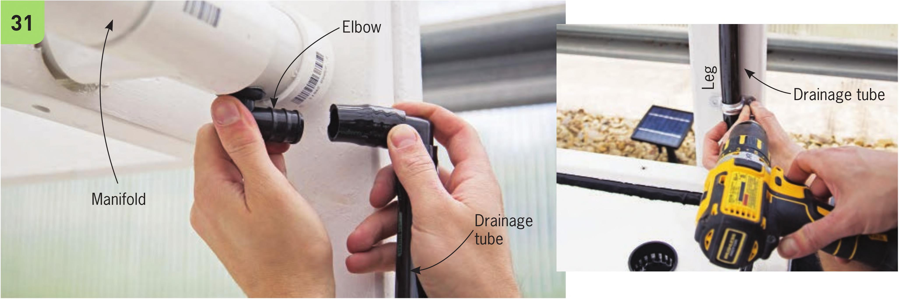
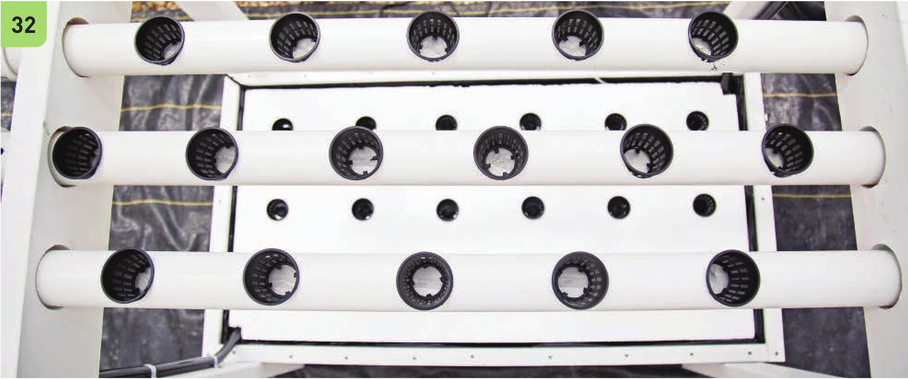
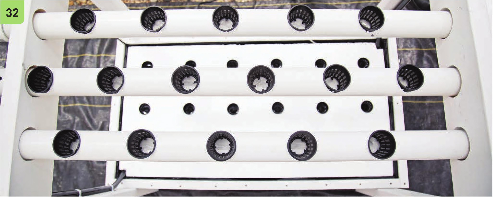

30 Place the end caps on the channels. These end caps should not be glued into place; it is best to have the ability to remove them in the future to facilitate cleaning and make troubleshooting potential problems easier. 31 Create the 3A" drainage line by connecting the elbow in the manifold to another %" elbow using a small section of W tubing. This will direct the drainage downward. It also makes it easy to run the W drainage line along one of the support legs. The drainage line should reach the bottom of the reservoir. The submersible pump and drainage line are positioned at corners diagonal to each other so the water will flow across the reservoir when water circulates through the channels. 32 Modify the 2" net pots by cutting out the bottom. This will ensure the seedlings have contact with the nutrient solution and it makes removing the plants from the pots easier during harvest. Insert the net pots into the channels. 80 DIY HYDROPONIC GARDENS


